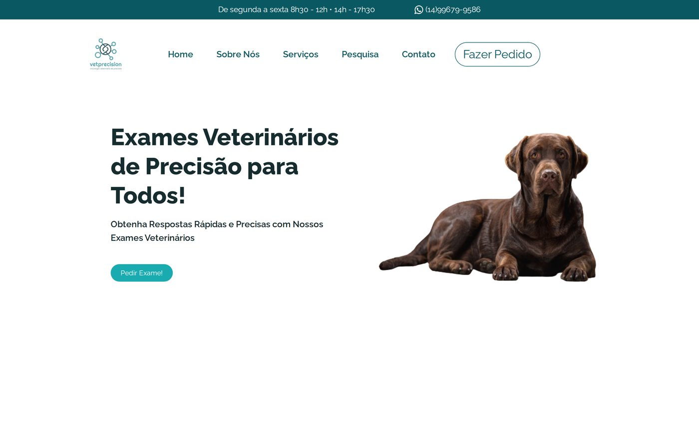

Cliente real · Em produção
VetPrecision — Laboratório de Oncologia Veterinária
Site institucional e sistema de solicitação de exames para um laboratório de diagnóstico veterinário, com geração automática de autorização de retirada de material em PDF e chatbot de atendimento via WhatsApp (API oficial da Meta).
Resultado: tutores solicitam exames e autorizações online, sem
depender de atendimento manual para cada etapa.
React
Vite
Tailwind CSS
PHP